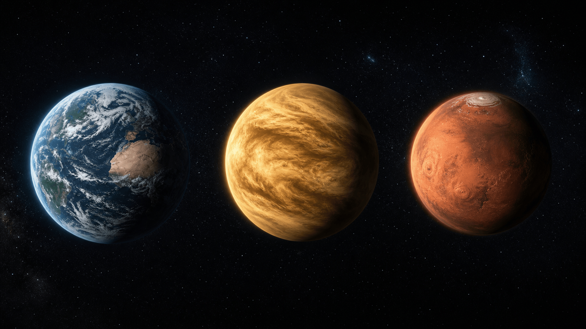

Introduction complète : atmosphères et constitutions planétaires.
1.1 — Définition et nature physique
Une atmosphère planétaire est l'enveloppe gazeuse entourant un corps céleste, retenue par sa force gravitationnelle. Elle forme l'interface entre la surface du corps et le vide spatial. Elle joue un rôle crucial : elle régule la température, et elle maintient des conditions propices à une chimie complexe — potentiellement à la vie.
Rétention gravitationnelle : l'existence d'une atmosphère dépend de la vitesse de libération de la planète () par rapport à l'agitation thermique des molécules de gaz (). Si , l'atmosphère est retenue sur des échelles de temps géologiques.
Une atmosphère, c'est un équilibre permanent entre deux forces. D'un côté, la gravité de la planète, qui retient les molécules de gaz. De l'autre, la chaleur, qui les agite et cherche à les faire fuir vers l'espace.
Le verdict dépend de deux vitesses : celle qu'il faut atteindre pour échapper à la planète (la vitesse de libération), et celle de l'agitation des molécules, qui grandit avec la température. Un monde petit ou trop chaud — Mars, Mercure — laisse filer son gaz ; un monde massif ou froid le garde des milliards d'années. Et comme les molécules légères, l'hydrogène et l'hélium, sont les plus rapides, ce sont elles qui s'échappent en premier.
Structure verticale : elle est principalement classifiée par son profil thermique, définissant des couches comme la troposphère, la stratosphère, la mésosphère, la thermosphère et l'exosphère.
1.2 — Équations fondamentales
L'équilibre d'une atmosphère repose sur deux piliers physiques majeurs. D'abord la relation fondamentale de l'hydrostatique, ; ensuite la loi des gaz parfaits, . Leur combinaison donne la variation barométrique de la pression avec l'altitude.
Avec P la pression, z l'altitude, la masse volumique du gaz, g l'accélération de la pesanteur, T la température, M la masse molaire moyenne du mélange et la constante des gaz parfaits. La troisième relation (profil barométrique, à température constante) montre que la pression décroît exponentiellement avec l'altitude — d'autant plus vite que le gaz est lourd.
1.3 — Composition chimique et structure
Homosphère vs hétérosphère : dans l'homosphère (basse atmosphère), la composition est uniforme grâce au mélange turbulent. Dans l'hétérosphère (haute atmosphère), la diffusion moléculaire et la photolyse induite par le rayonnement solaire font varier la composition selon la masse des molécules.
Ionosphère : région située à haute altitude où le rayonnement solaire (UV, rayons X) ionise les gaz, créant un plasma riche en électrons libres.
1.4 — Importance pour le climat et la vie
Régulation thermique (effet de serre) : les gaz à effet de serre (CO₂, H₂O, CH₄) maintiennent une température de surface supérieure à l'équilibre radiatif. Exemple : sans atmosphère, la Terre aurait ≈ −18 °C contre ≈ +15 °C actuellement.
Protection biologique : la couche d'ozone absorbe les UV nocifs ; l'atmosphère dense agit comme bouclier contre les micrométéoroïdes. Transport d'énergie : la circulation atmosphérique redistribue l'énergie des zones équatoriales vers les pôles.
2 — Comparaison des atmosphères du Système solaire

| Planète | Composant principal | Pression au sol |
|---|---|---|
| Terre | N₂ (78 %), O₂ (21 %) | 1 bar |
| Mars | CO₂ (95,3 %) | 0,006 bar |
| Vénus | CO₂ (96,5 %) | 92 bar |
Sources et références consultées
Météo-France · Université de Bordeaux · Dobrijevic, M. (2020), Introduction à l'étude des atmosphères planétaires · Ministère de la Transition écologique.